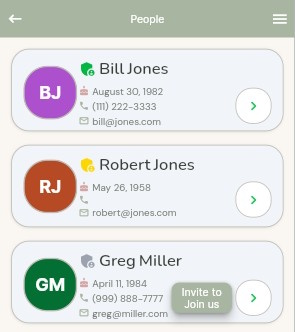

The People screen shows all members and contacts across your families. Each person is listed with their name, birthday, phone number, and email address.
Each person in the list has a colored icon showing their initials. A small badge on the icon indicates their status — a green badge indicates an active member, a yellow badge indicates a contact who has not yet joined the app.

Contacts who have not yet joined ffCircle will show an Invite to Join button. Tapping it will send them your family code by SMS or copy it to the clipboard so you can share it another way. Use this for people you want as active members of your family — not for contacts you added simply to store information such as a mechanic or doctor.
Tap the arrow on the right side of any person to open their detail screen where you can view and edit their full information.
Tap the plus icon in the bottom right corner to add a new person to your family.